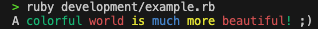

MPUtils

The MP-Utils library aims to facilitate the writing of daily scripts.
It can centralize messages in files and also add facilitators for the recovery and manipulation of some contents.
Installation
Install the gem and add to the application's Gemfile by executing:
$ bundle add mp-utils
And then execute:
$ bundle install
If bundler is not being used to manage dependencies, install the gem by executing:
$ gem install mp-utils
Usage
Resources
The Resources class is designed to manage the access to external resources, such as message templates or configuration files.
It allows you to specify custom paths or utilize default paths for accessing these resources.
To define a custom path for your resources, there are two ways.
- Set an environment variable with the desired path in your bash or zsh.
bash SCRIPT_CUSTOM_RESOURCES='My/Custom/Path' - Define within your Ruby code the path you want to use:
ruby Resources.define(custom_path: 'My/Custom/Path')
Key
The Key class is used to encapsulate strings within specific prefixes and suffixes, making it easier to identify and manipulate placeholders within messages.
Example:
key = Key.new("username")
puts key.to_s
# Output: "<||username||>"
Message
The Message class enables you to create message objects that can dynamically replace placeholders within a message template with actual data. This is particularly useful for applications that require customized messages based on user input or other runtime parameters.
Example:
greatings = Message.new('hellow_world')
puts greatings.to_s
# Output: "Hellow World from MPUtils!"
composed_greatings = Message.new("<||hellow_world||>\nWe hope you are well!")
puts composed_greatings.to_s
# Output:
# Hellow World from MPUtils!
# We hope you are well!
If you want to add a custom message, just create a txt file in the message folder of the custom_path that you defined.
Example:
If you have a text file with the following content:
Welcome, <||username||>! Your code is <||code||>.
And this file is located in the path: My/Custom/Path/Messages/example/message.txt
You can retrieve it as follows:
Resources.define(custom_path: 'My/Custom/Path')
custom_replaces = { Key.new('username') => 'Alice', Key.new('code') => 'XYZ123'}
= Message.new('example/message', replaces: custom_replaces)
puts .to_s
# Output:
# Welcome, Alice! Your code is XYZ123.
= Message.new("<||example/message||>\nWe hope you are well <||username||>!", replaces: custom_replaces)
puts .to_s
# Output:
# Welcome, Alice! Your code is XYZ123.
# We hope you are well Alice!
It is also possible to apply colors, backgrounds, and effects to the text.
For this, your text file needs to have the suffix .aas.txt.
Example:
If you have a text file with the following content:
A <color:green>colorful <color:red>world <color:yellow>is <color:blue>much </color>more </color>beautiful</color>!</color> ;)
And this file is located in the path: My/Custom/Path/Messages/example/message.aas.txt
You can retrieve it as follows:
Resources.define(custom_path: 'My/Custom/Path')
custom_replaces = { Key.new('username') => 'Alice' }
= Message.new('example/message', replaces: custom_replaces)
puts .to_s
Output:

For more information about colors, backgrounds, and effects, consult the documentation of ANSIStyleManager.
Question
The Question class was created with the objective of asking questions to the user.
It receives a message that will be presented as a question to the user when a response method is called.
All messages received by the class are automatically placed in an instance of Message.
Here are some examples with the available answers:
- Boolean Answer
# Asking the user a yes/no question and processing the response.
question = Question.new("Do you like Ruby?")
puts question.bool_answer ? "You like Ruby!" : "You don't like Ruby?"
- Float Answer
# Asking the user for a floating-point number, such as a version number.
question = Question.new("What is the value of pi?")
version = question.float_answer
puts "The value of pi is #{version}"
- Integer Answer
# Prompting for an integer, for example, asking for a quantity.
question = Question.new("How many Ruby gems do you need?")
quantity = question.integer_answer
puts "You need #{quantity} gems."
- Option Answer
# Allowing the user to choose from a list of options.
question = Question.new("Choose your preferred Ruby web framework:")
= ["Rails", "Sinatra", "Hanami"]
framework = question.option_answer()
puts "You have chosen #{framework}."
- String Answer
# Asking for a string input that matches a specific pattern, such as a name.
question = Question.new("What is your name?")
name = question.string_answer(regex: /^[A-Za-z ]+$/)
puts "Hello, #{name}!"
Development
To install this gem onto your local machine, run bundle exec rake install. To release a new version, update the version number in version.rb, and then run bundle exec rake release, which will create a git tag for the version, push git commits and the created tag, and push the .gem file to rubygems.org.
Contributing
Bug reports and pull requests are welcome on GitHub at https://github.com/MarcioFPaludo/ruby-mp-utils.
License
The gem is available as open source under the terms of the MIT License.